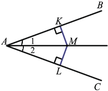

Каждая точка биссектрисы неразвёрнутого угла равноудалена от его сторон.
Обратно: Если точка равноудалена от сторон неразвернутого угла, то она лежит на его биссектрисе..
1) Дано: ∠ВАС, АМ - биссектриса, МК ⏊ АВ, ML ⏊ АС.
Доказать: MK = ML
Доказательство:

Рассмотрим △АМК и △AML: МК ⏊ АВ, ML ⏊ АС, поэтому рассматриваемые треугольники прямоугольные. АМ - общая гипотенуза, ∠1 = ∠2, т.к. луч АМ - биссектриса, следовательно, △АМК = ∠AML, по гипотенузе и острому углу, а в равных треугольниках против соответственно равных углов лежат равные стороны, поэтому MK = ML.
2) Дано: ∠ВАС, MK = ML, МК ⏊ АВ, ML ⏊ АС.
Доказать: АМ - биссектриса ∠ВАС
Доказательство:
Рассмотрим △АМК и △AML: МК ⏊ АВ, ML ⏊ АС, поэтому рассматриваемые треугольники прямоугольные. АМ - общая гипотенуза, MK = ML по условию, следовательно, △АМК = △AML, по гипотенузе и катету, а в равных треугольниках против соответственно равных сторон лежат равные углы, поэтому∠1 = ∠2, а это означает, что луч АМ - биссектриса ∠ВАС. Теорема доказана.